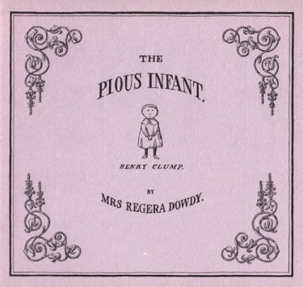

Thursday, August the 10th, 2017
back to: title, date or indexes

Never has an infant been so pious as little Henry Clump, the pious infant whose life is told in The Pious Infant by Mrs Regera Dowdy—or so I thought. But when I was enmired in the research for Mr Key's Shorter Potted Brief, Brief Lives, I learned of Saint Rumwold, by comparison with whom Henry Clump seems the spawn of Satan.
Saint Rumwold was born in King's Sutton in 622 AD, the son of Saint Cyneburga and King Alchfrid. His first words—uttered on the day of his birth—were “I am a Christian”. He then asked to be baptised, and to receive Holy Communion. The next day he preached a sermon, quoting freely from the Bible. On the third day, he gave another sermon, addressed to his parents, after which he keeled over and died. We can be sure he ascended into Heaven.
Hooting Yard on the Air, July the 24th, 2008 : “Janitor” (starts around 28:39)
Hooting Yard on the Air, September the 21st, 2017 : “Mr Key Goes To Innsmouth” (starts around 26:19)